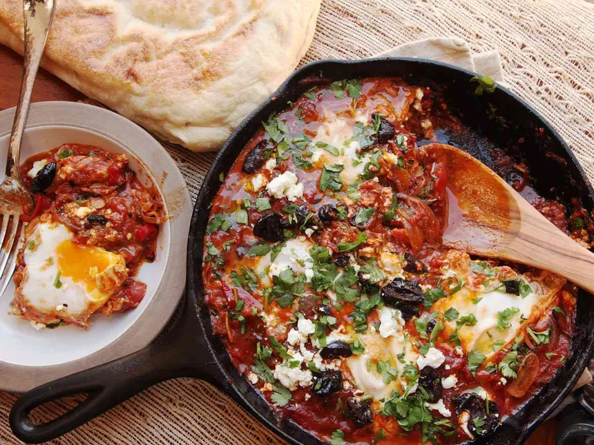

Shakshuka

Description
A delicous and savory dish common all over the middle east.
Best served with some fluffy bread to dip!
Ingredients
- 2 Red Bell Pepper
- 1 Large Onion
- 800g Or 1 large Can of Peeled Tomatoes
- 3-5 Eggs
- Feta Cheese
- Olives
- Parsley
- (Optional) Chorizo
- Spices: Smoked Paprika, Cumin, Garlic
Steps
- Dice Onion and Bell Pepper while heating up some Olive Oil over medium heat in a large Pan
- Add onion and red pepper to pan and cook until browned and softened
- Lower heat and add the garlic, smoked paprika and cumin. Combine and let it the aromas develop for a minute or two
- Crush tomatoes and add them to the pan. Let it simmer for 10 minutes
- Make little wholes in the mixture and add the eggs. Cover with a lid and let it steam until the eggs are poached
- Remove from heat, add toppings such as olives, feta or chorizo. Hit it with a some salt and black pepper and serve with fluffy bread!
Home